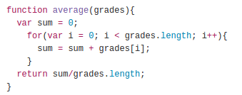
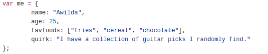
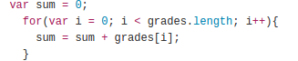

Code that can pass in values and return a value when called.
Example:
Contains code inside called, properties that is written
in name: value pairs.
Example:
Each method returns a specific behavior.
w3schools.com - Array methodsTypes:
Each method returns a specific behavior.
w3schools.com - Array methodsTypes:
Creates a loop that begins with a counter then, a boundary
and the expression evaluator. This is followed by the statement
to be returned when expression's value is true.
Example:
